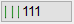
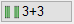
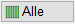

")

Alternativer Aufruf: Mittlere Maustaste auf eine Stablinie.
Biegeformen können mehrdimensional variabel erzeugt werden. Ein Bügel kann z. B. sowohl in der Breite als auch in der Höhe veränderlich verlegt werden. Jeder variablen Teillänge wird ein eigenes Polygon zugeordnet. Es besteht die Möglichkeit, je Biegeform bis zu zehn veränderliche Teillängen zu definieren. Am Auszug werden die jeweiligen Teillängen mit L1, L2 etc. gekennzeichnet. Die zugehörigen Längen werden in der automatisch generierten Voutentabelle angegeben.
·Beachten Sie, dass diese Funktion sich eher für kleine Flächen eignet und die maximale Stablänge bei dieser Funktion nicht berücksichtigt wird. Teilen Sie ggf. die Fläche in mehrere Teilflächen auf oder nutzen Sie die Flächenbewehrung.
·Bei der Staffelverlegung im gevouteten Bereich wird nach Eingabe der Verlegebereichslänge der wahre Abstand zwischen den Eisen ermittelt. Wird dabei der zulässige Mindestabstand unterschritten, werden Sie durch eine Meldung darauf hingewiesen. Ergänzende Hinweise unterstützen Sie bei der Problemlösung.
Funktionen |
Beschreibung |
|---|---|
Voutenverlegung mehrdirektional erzeugen (variable Teillänge). |
|
Voutenverlegung löschen. |
|
Voutenverlegung ändern. |
|
Voutenverlegung aus einer Positionierungsgruppe lösen. |
|
Voutenverlegung generieren. |
Optionen |
Beschreibung |
|---|---|
Grundeinstellungen für Vouten. Öffnet den Dialog Konfiguration Voute. |
|
   |
Auswahl, welche Stäbe gezeichnet werden sollen. 111: Anfang, Mitte, Ende 3+3: je drei am Anfang und Ende Alle: alle Stäbe werden gezeichnet |
Siehe auch:
·Verlegung als Staffel (Bügelstaffel)